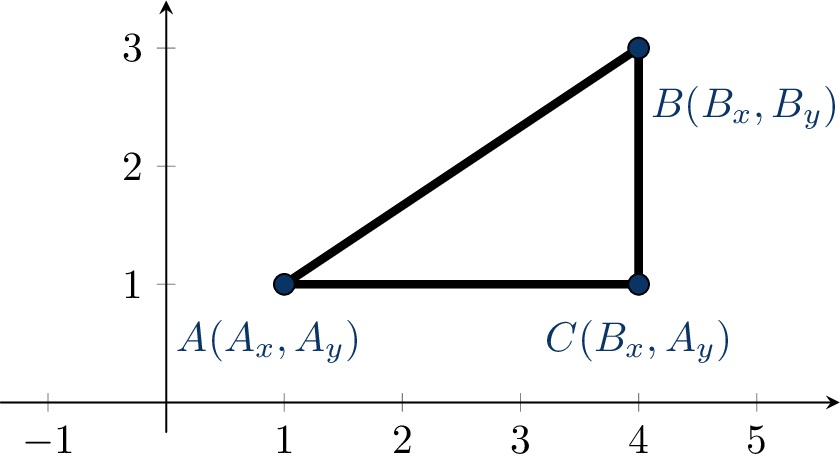

Задаци: Геометријске формуле#
Алгоритми и програми у програмском језику C: Геометрија и примена геометријских формула.
Тренинг#
Прочитај текст задатка.
Дужина у метрима коју претрчи спортиста док једном обиђе терен једнака је обиму тог терена тј. збиру двоструких вредности дужине и ширине терена изражене у метрима. Према томе, потребно је исписати збир двоструких вредности два учитана броја.
Предложено решење задатка
#define _CRT_SECURE_NO_WARNINGS
#include <stdio.h>
int main(void)
{
int duzina, sirina;
scanf("%d%d", &duzina, &sirina);
int obim = 2 * duzina + 2 * sirina;
printf("%d", obim);
return 0;
}
Лист папира#
Прочитај текст задатка.
Површина листа папира изражена у квадратним милиметрима једнака је производу висине и ширине тог правоугаоника изражених у милиметрима. Према томе, потребно је исписати производ два учитана броја.
Предложено решење задатка
#define _CRT_SECURE_NO_WARNINGS
#include <stdio.h>
int main(void)
{
int visina, sirina;
scanf("%d%d", &visina, &sirina);
int povrsina = visina * sirina;
printf("%d", povrsina);
return 0;
}
Столњак#
Прочитај текст задатка.
Пошто је \(P=r^2\pi\), из познате површине круга \(P\) може да се одреди полупречник \(r\) (на основу везе \(r=\sqrt{P/\pi}\)). Када је израчунат полупречник, потребно је да се примени формула за обим круга \(O=2r\pi\).
У програмском језику C константа \(\pi\) није стандардизована, већ да би се та
константа могла употребити потребно је на почетку програма (пре include
директива) навести дефиницију
#define _USE_MATH_DEFINES
и тек након ње укључити заглавље math.h.
Предложено решење задатка
#define _CRT_SECURE_NO_WARNINGS
#define _USE_MATH_DEFINES
#include <stdio.h>
#include <math.h>
int main(void)
{
double P, r, O;
scanf("%lf", &P);
r = sqrt(P / M_PI);
O = 2 * r * M_PI;
printf("%.2lf", O);
return 0;
}
Други начин је, наравно, дефинисање константе у програму
const double PI = 3.14159265359;
Међутим, поставља се питање броја децимала које је потребно навести (две, три децимале које ученици знају напамет нису увек довољне).
Алтернатива је да се \(\pi\) израчуна коришћењем неких тригонометријских функција (нпр. као \(\arccos(-1)\) или \(4\cdot\arctan(1)\)).
double PI = acos(-1);
или
double PI = 4 * atan(1);
Фудбалски терен#
Прочитај текст задатка.
Дужине страница правоугаоне ограде су \(a=d+2\cdot r\) и \(b=s+2\cdot r\), па је дужина ограде обим правоугаоника са наведеним страницама, који je једнак: \(2\cdot(a+b)=2\cdot((d+2\cdot r)+(s+2\cdot r))=2\cdot(d+s+4\cdot r)\). У програму је могуће употребити помоћне променљиве у којима се чува дужина страница ограде, а затим њиховим коришћењем израчунати обим. Тиме се добија мало дужи, али разумљивији програм.
Предложено решење задатка (1)
#define _CRT_SECURE_NO_WARNINGS
#include <stdio.h>
int main(void)
{
int duzinaTerena, sirinaTerena, rastojanje;
scanf("%d%d%d", &duzinaTerena, &sirinaTerena, &rastojanje);
int duzinaOgrade = duzinaTerena + 2 * rastojanje;
int sirinaOgrade = sirinaTerena + 2 * rastojanje;
int obimOgrade = 2 * (duzinaOgrade + sirinaOgrade);
printf("%d", obimOgrade);
return 0;
}
Друга могућност је директно применити крајњу формулу коју смо извели. Тиме се добија краћи, али мало мање разумљив програм.
Предложено решење задатка (2)
#define _CRT_SECURE_NO_WARNINGS
#include <stdio.h>
int main(void)
{
int d, s, r;
scanf("%d%d%d", &d, &s, &r);
int obim = 2 * (d + s + 4 * r);
printf("%d", obim);
return 0;
}
Растојање тачака#
Прочитај текст задатка.
{kind=link}
Посматрајмо тачку \(C\) која има координате \((B_x,A_y)\). Троугао \(ABC\) је правоугли троугао са правим углом код темена \(C\). Тражено растојање између тачака \(A\) и \(B\) једнако је дужини хипотенузе тог троугла и може се израчунати применом Питагорине теореме која тврди да је квадрат над хипотенузом једнак збиру квадрата над обе катете. Пошто су катете нашег троугла дужи \(AC\) и \(BC\), важи да је \(|AB|^2=|AC|^2+|BC|^2\), и да је \(|AB|=\sqrt{|AC|^2+|BC|^2}\). Пошто тачке \(A\) и \(C\) имају исту \(y\)-координату, дужина дужи \(AC\) може се израчунати као \(|B_x-A_x|\). Заиста, пошто је дуж \(AC\) паралелна оси \(x\), њена дужина једнака је дужини интервала који представља њену пројекцију на ту осу. То је интервал \([A_x,B_x]\) ако је \(A_x\leq B_x\) и његова дужина је \(B_x-A_x\), тј. интервал \([B_x,A_x]\) ако је \(B_x\leq A_x\) и његова дужина је \(A_x-B_x\). У оба случаја, дужина је једнака апсолутној вредности разлике бројева \(B_x\) и \(A_x\). Слично, дужина дужи \(BC\) може се израчунати као \(|B_y-A_y|\). Зато је \(|AB|=\sqrt{|B_x-A_x|^2+|B_y-A_y|^2}\). Приметимо да, пошто је квадрат броја увек позитиван, није неопходно користити апсолутну вредност и важи да је \(|AB|=\sqrt{(B_x-A_x)^2+(B_y-A_y)^2}\).
Подсетимо се, у језику C се квадратни корен може израчунати библиотечком
функцијом sqrt() декларисаном у заглављу math.h.
Предложено решење задатка
#define _CRT_SECURE_NO_WARNINGS
#include <stdio.h>
#include <math.h>
int main(void)
{
double ax, ay, bx, by;
scanf("%lf%lf%lf%lf", &ax, &ay, &bx, &by);
double dx = bx - ax, dy = by - ay;
double d = sqrt(dx * dx + dy * dy);
printf("%.5lf", d);
return 0;
}
Површина троугла датих темена#
Прочитај текст задатка.
Задатак је математички могуће решити на неколико начина.
Херонов образац#
Један начин је да применимо Херонов образац \(P=\sqrt{s\cdot(s-a)\cdot(s-b)\cdot(s-c)}\), где су \(a\), \(b\) и \(c\) дужине страница троугла, а \(s=(a+b+c)/2\) његов полуобим. Дужине страница можемо израчунати као растојање између темена троугла, применом Питагорине теореме. Мана овог решења је то што се у њему користи квадратни корен, иако се до решења може доћи и без кореновања.
Предложено решење задатка (1)
#define _CRT_SECURE_NO_WARNINGS
#include <stdio.h>
#include <math.h>
int main(void)
{
double ax, ay, bx, by, cx, cy;
scanf("%lf%lf%lf%lf%lf%lf", &ax, &ay, &bx, &by, &cx, &cy);
double a = sqrt((cx - bx) * (cx - bx) + (cy - by) * (cy - by));
double b = sqrt((cx - ax) * (cx - ax) + (cy - ay) * (cy - ay));
double c = sqrt((bx - ax) * (bx - ax) + (by - ay) * (by - ay));
double s = (a + b + c) / 2;
double P = sqrt(s * (s - a) * (s - b) * (s - c));
printf("%.5lf", P);
return 0;
}
Формула пертле#
Задатак је могуће решити и општијом формулом пертле која омогућава израчунавање површине произвољних полигона којима се странице не пресецају међусобно. Заиста, ако напишемо координате тачака у следећем облику
Формула се гради тако што се са једним знаком узимају производи одозго-наниже, слева-удесно (то су \(a_xb_y\), \(b_xc_y\) и \(c_xb_y\)), док се са супротним знаком узимају производи одоздо-навише, слева удесно (то су \(a_xc_y\), \(c_xb_y\), и \(b_xa_y\)), што, када се нацрта, заиста подсећа на цик-цак везивање пертли.
Ова се формула може извести помоћу векторских производа и детерминанти, али и елементарнијим техникама (сабирањем означених прозвода троуглова или трапеза).
У језику C апсолутну вредност реалног броја можемо израчунати библиотечком
функцијом fabs декларисаној у заглављу math.h.
Предложено решење задатка (2)
#define _CRT_SECURE_NO_WARNINGS
#include <stdio.h>
#include <math.h>
int main(void)
{
double ax, ay, bx, by, cx, cy;
scanf("%lf%lf%lf%lf%lf%lf", &ax, &ay, &bx, &by, &cx, &cy);
double P = fabs(ax * by + bx * cy + cx * ay - ax * cy - cx * by - bx * ay) / 2.0;
printf("%.5lf", P);
return 0;
}
Ниво базена#
Прочитај текст задатка.
Површина базена на коју пада киша је \(a\cdot{b}\) метара. Током олује падне \(n\) литара кише по једном квадратном метру, према томе у базену се током олује количина воде увећа за \(a\cdot{b}\cdot{n}\) литара. Према томе, ниво воде у базену подигао се за висину квадра запремине \(a\cdot{b}\cdot{n}\) литара, дужине \(a\) метара и ширине \(b\) метара. Запремина квадра дужине \(a\) метара, ширине \(b\) метара и висине \(h\) метара је \((a\cdot{b}\cdot{h})m^{3}\) односно \((a\cdot{b}\cdot{h}\cdot{1000})dm^{3}\) (тј. литара). Решавањем једначине \(a\cdot{b}\cdot{h}\cdot{1000}=a\cdot{b}\cdot{n}\) добијамо да је тражена висина \(h\) једнака \(\frac{n}{1000}m\). Висина се тражи у \(cm\), што онда износи \(\frac{n}{10}cm\) (јер у једном метру има 100 центиметара).
Предложено решење задатка
#define _CRT_SECURE_NO_WARNINGS
#include <stdio.h>
int main(void)
{
double n, a, b, c;
scanf("%lf%lf%lf%lf", &n, &a, &b, &c);
double h = n / 10;
printf("%.2lf", h);
return 0;
}
НАПОМЕНА: Можемо приметити да нам димензије базена нису биле потребне за решавање задатка (јер у једначини из које добијамо решење долази до скраћивања димензија базена \(a,b\) и \(c\)).
Правоугаоник дат наспрамним теменима#
Прочитај текст задатка.
Странице правоугаоника су паралелне координатним осама. Дужине страница једнаке су дужинама интервала праве који се добијају кад се правоугаоник пројектује на \(x\), односно на \(y\)-осу. Пројекцијом правоугаоника на \(x\)-осу добијамо интервал чије су границе \(x\)-координате наспрамних темена. Ако наспрамна темена правоугаоника имају координате \((x_1,y_1)\) и \((x_2,y_2)\), интервал добијен пројекцијом на \(x\)-осу је интервал \([x_1,x_2]\) или интервал \([x_2,x_1]\) у зависности да ли је \(x_1<x_2\) или је \(x_1>x_2\). Дужина добијеног интервала, односно дужина странице \(a\) правоугаоника је \(x_2-x_1\) ако је \(x_1<x_2\), односно \(x_1-x_2\) ако је \(x_1>x_2\). Према томе дужину странице \(a\) можемо добити као апсолутну разлику \(x\)-координата наспрамних темена правоугаоника (\(a=|x_2-x_1|\)). Слично добијамо и дужину странице \(b\) (\(b=|y_2-y_1|\)).
После одређивања дужина страница \(a\) и \(b\) применом одговарајућих формула израчунавамо обим (\(O=2\cdot(a+b)\)) и површину (\(P=a\cdot{b}\)) правоугаоника. Дијагоналу правоугаоника можемо израчунати применом Питагорине теореме која каже да је у правоуглом троуглу квадрат дужине хипотенузе (странице наспрам правог угла) једнак збиру квадрата дужина катета (страница које заклапају прав угао). Пошто две суседне странице правоугаоника и његова дијагонала граде правоугли троугао, на основу Питагорине теореме важи да је \(d^2=a^2+b^2\) тј., пошто је \(d>0\), важи да је \(d=\sqrt{a^2+b^2}\).
Формуле за израчунавање обима, површине и дијагонале правоугаоника
имплементиране су засебним функцијама. Без обзира што су координате темена
целобројне, дужина дијагонале мора бити реалан број. У језику C апсолутну
вредност целог броја можемо израчунати библиотечком функцијом abs
декларисаној у заглављу stdlib.h, а квадратни корен библиотечком функцијом
sqrt декларисанoj у заглављу math.h.
Предложено решење задатка
#define _CRT_SECURE_NO_WARNINGS
#include <stdio.h>
#include <stdlib.h>
#include <math.h>
int main(void)
{
int x1, x2, y1, y2;
scanf("%d%d%d%d", &x1, &y1, &x2, &y2);
int a = abs(x2 - x1);
int b = abs(y2 - y1);
double d = sqrt(a * a + b * b);
int O = 2 * (a + b);
int P = a * b;
printf("%.2lf\n%d\n%d", d, O, P);
return 0;
}
Троугао одређен правом и координатним почетком#
Прочитај текст задатка.
Пресек праве са \(x\) осом се може одредити решавањем једначине \(0=a\cdot{x}+b\) и то је тачка \((-\frac{b}{a},0)\). Пресек праве са \(y\) осом се може одредити решавањем једначине \(y=a\cdot{0}+b\) по променљивој \(y\) и то је тачка \((0,b)\). Због тога права са координатним осама формира правоугли троугао коме су темена \(O(0,0)\), \(M(-\frac{b}{a},0)\) и \(N(0,b)\) и за чије странице важи:
катета \(OM\), означимо је са \(katetaX\), на \(X\) оси има дужину \(|\frac{-b}{a}|\)
катета \(ON\), означимо је са \(katetaY\), на \(Y\) оси има дужину \(|b|\)
хипотенуза \(MN\), означимо је са \(hipotenuza\), на основу Питагорине теореме, има дужину \(\sqrt{katetaX^2+katetaY^2}\)
Према томе, површина троугла је \(\frac{katetaX\cdot{katetaY}}{2}\) (јер је свака катета уједно и висина правоуглог троугла), а обим \(katetaX+katetaY+hipotenuza\).
Предложено решење задатка
#define _CRT_SECURE_NO_WARNINGS
#include <stdio.h>
#include <math.h>
int main(void)
{
double a, b;
scanf("%lf%lf", &a, &b);
double katetaX = fabs(-b / a);
double katetaY = fabs(b);
double hipotenuza = sqrt(katetaX * katetaX + katetaY * katetaY);
double povrsina = katetaX * katetaY / 2;
double obim = katetaX + katetaY + hipotenuza;
printf("%.2lf\n%.2lf", povrsina, obim);
return 0;
}